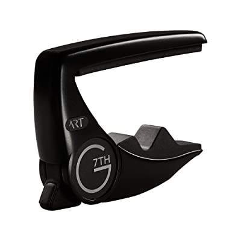
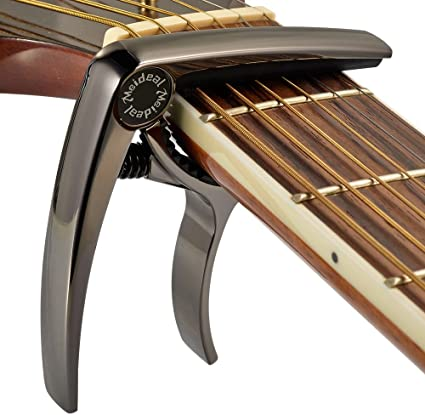

Best guitar capo for acoustic and electric guitars
Hey, are you a guitar player and looking for capo to enhance your guitar playing experience. A guitar capo is a must use device which is used frequently by a guitar player. You can move capo all over your guitar fret board whenever it is required and it allows you to play more song with less cord. A guitar capo is also used by a musician to raise the pitch of his fretted instrument. So ultimately being a simple device a guitar capo allows you to change the pitch of your guitar and thus it allows you to match your guitar sound with your voice by changing the playing key.
You see, a guitar capo gives you a lot of advantages. So for the best experience you should use a right capo on your instrument. Rather it will ruin your guitar playing because if the quality of your capo isn’t good it will gradually lose its capability to hold strings of your guitar. Ultimately after few days it will no longer effective and you might experience horrible sound. So you have to careful before buying a capo and you should look after the quality of the capo you’re going to buy. It may be quite tough to decide which capo you should buy because there are so many models available in the market to puzzle you. You will be happy because we have collected a list of some awesome guitar capo in concern the quality and budget. Hope, it will be beneficial to you.
List of guitar capo for you
- • G7th Heritage, Guitar capo (71011)

- • G7TH performance 3 acoustic capo, Celtic Gold
- • G7th Performance 3 capo with Art(Steel String Satin Black)

- • Creative tunings spider capo standard- the studio grade
- • Paige Acoustic Guitar Bridge Pins(P6E)
- • Nordic Essentials Guitar Capo Deluxe
- • Kyser Quick-Change Capo,Black
- • D’Addario NS Tri-action capo, Black

- • Premium Deluxe Guitar Capo

- • D’Addario Classical Guitar Capo, Black
- • Shubb S1 Stainless Steel Guitar Capo For steel string
- • TANMUS 3in1 Zinc Metal Capo
G7th Heritage, Guitar capo (71011)
Huge price may exceed your budget. Is it really worth your money?
- + Lifetime warranty
- + Premium quality
- + Adaptive radius technology
- + Protect your guitar fret board material
- - Protect your guitar fret board material
It has the award winning quality and as like other G7th capos it carries a free lifetime warranty. This G7th capo has a traditional yoke style look with simple design. Its adaptive radius technology gives you maximum tuning stability. One important note is that the force is exerted from the centre of the neck which allows a good gripping ability for this capo. This capo will protect your guitar neck from all around as it have silicone rubber neck pad as well as comprehensive side protection which provide a complete protection for your instrument. It has mechanical the adjustor knob and build quality is awesome. You may think why you should buy this when you can buy a average capo with few dollars. If you have the enough budget this capo is recommended for you because for sure it will provide you more than premium quality support throughout your journey with music.
G7TH performance 3 acoustic capo, Celtic Gold
May be it seems like high price but it will be a great choice!!!
- + May be it seems like high price but it will be a great choice!!!
- + Ensure premium quality
- + Exotic design
- + Adaptive radius technology
- - High price.
It ensure premium quality configuration. It’s quite easy to control by single hand and perfect for any type of acoustic and electric guitar. Its tension control system is unique. You can attach and release the capo by simple squeezing. This performance 3 capo gives you complete control over the pressure you place on your strings. This guitar capo has adaptive radius technology which gives you maximum tuning stability all over the fret board. And obviously the design!!! It’s simply awesome and eye soothing. I have to say the price is little bit higher for a capo but it really worth off your money. In my opinion you can buy this because at least the design will wonder you for sure and its good enough for long term use.
G7th Performance 3 capo with Art(Steel String Satin Black)
Overall quality is great and smart finishing.
- + Lifetime warranty
- + Adaptive radius technology
- + Versatile
- - Slightly high price
Another great capo offered by G7th. The finish is simple, smart and satisfactory. It has the adaptive radius technology which insures great tuning strength. The tension control system is quite good and attach and release technique is similar to the G7th performance 3 acoustic capo, Celtic capo. It’s easy to control. Overall it would be a great deal for you.
Creative tunings spider capo standard- the studio grade
Using this guitar capo cleverly will drive your guitar playing to the next level!!!
- + Unique design
- + Lifetime warranty
- + Fine tuning for each string
- + Make your guitar playing versatile
- - Might need good knowledge over notation.
- - Need to check every time you change the capo position
Hey are you looking for something different and unique. Probably it might help you out. Particularly I like this spider capo for its creative design to control each string. If you have good knowledge over notation I think you should go for this capo. The price is not too much high and it will provide you several advantages which aren’t available in standard tuning capos. You can change tuning keys easily in the middle of your performances. This capo allows you to cop up with vast range of music. You can use multiple creative tuning spider capos to tune different strings in different position throughout the fret board. So definitely this capo is worth of your money. I think you should go for it!!!
Paige Acoustic Guitar Bridge Pins (P6E)
In this budget probably this capo is one of the best guitar capo!!!
- + Ultra thin design
- + Control tension
- + No buzzing or muting
- + Durable
The design of this guitar capo is most likely previously discussed G7th heritage guitar capo. And as like G7th heritage guitar capo this capo also works through same method and that is adapted radius adjustment. And you also provided by protection needed for your guitar fret board. This light weight guitar capo is cheaper than that G7th heritage capo with pretty much similar function. So don’t think too much and grab it. In my opinion you will not regret it after buying this capo.
Nordic Essentials Guitar Capo Deluxe
This premium grade guitar capo offers you lifetime warranty with such low price!!!
- + Ultra portable
- + Easy to use with one hand
- + Suitable for 6 and 12 string instrument
- + Silicone pad for instrument protection
This guitar is made of premium grade zinc alloy and the still spring comes with lifetime warranty. You can easily carry this guitar capo with you and it’s easy to use. And don’t worry about your instrument protection; this guitar capo comes with silicon pads for protection. The design is pretty much smart and looks great; it will give you the premium feels. Is your budget is of midrange then you can blindly go for it.
Kyser Quick-Change Capo
This good reputed capo won’t disappoint you.
- + Easy to use
- + Won’t blemish your instrument neck
- + Aluminium body will last for years
- + Performers choice
May be it look like a traditional small guitar capo but it has earn many professional guitar players trust. This guitar capo made up on simple design but do just for what it is made. The spring is made up of still and will last for years. The tuning strength is enough and you can easily change key position to increase the pitch of your instrument by single hand. This guitar capo will not do any harm to your instrument’s neck. You will definitely love the experience with this Kyser quick-change capo.
D’Addario NS Tri-action capo, Black
This tri action guitar capo will worth your money (100%)!!!
- + Tri action geometry
- + Super easy to operate
- + Construction is strong enough
- + Dedicated pick holder
This ultimate guitar capo is offered by most popular brand for guitar accessories. You don’t have to think twice about the quality of this capo. This guitar capo has strong construction made by aircraft-grade aluminium. Thus this guitar capo ensures the premium build quality. The tri action geometry made this guitar capo so special because it lowers the forces required to operate (only1/3 forces required). The tension adjustment is in micrometer level. By the way it has a dedicate slot to hold your pick. As a hole D’Addario made this guitar capo for ultimate choice for you.
Premium Deluxe Guitar Capo
- + High performance
- + Easy to move
- + Silicone protection
- + Long lasting aluminium alloy metal+
This premium deluxe guitar capo is made up of premium grade aluminium alloy which ensures a good quality. It has silicone pad to protect your instrument from scratching while operate the capo over the fret board. This guitar capo will stays in tune with a great intonation. This light weight device is built to last for years. The finishing will make you feels premium.
D’Addario Classical Guitar Capo, Black
This ultimate classical guitar capo by D’Addario will boost you to the next level in classical guitar journey.
- + Ultra light aerospace grade aluminium metal
- + One hand operation
- + Micrometer adjustment mechanism
- - Only for classical guitar.
This guitar has ultimate micrometer adjustment technology. This allows a guitar player to dial in the exact tension which is necessary for clear and buzz free sound. This guitar capo reduces the need of retune which helps to deliver exceptional intonation. Finally this extreme light weight guitar capo brings a great music experience with your classical guitar. As this guitar capo is particularly design for classical guitar, you should buy it if you are playing with classical guitar.
Shubb S1 Stainless Steel Guitar Capo For steel string
Is this new roller system works perfectly?
- + Roller system works great to keep in tune
- + Perfectly fit on most acoustic and electric guitar
- - May face trouble with the screw.
This guitar capo is designed for acoustic and electric guitar and it fits most of them. Especially it is for steel string guitar. It has the screw roller system which is control manually and it works well. But you have to keep in mind one thing you may face trouble with screw as every time you set the capo you have to tighten the screw so it makes you little bit slow. By the way this capo will last for years. Despite the trouble with capo screw you can buy this.
TANMUS 3in1 Zinc Metal Capo
This capo is under 10 dollar but offer some good facilities.
- + Easy to use and pick holder
- + Come with pin puller
- + Price is low
- + 90 days return refund guarantee
This TANMUS 3in1 Zinc Metal Capo can be a compact package for you. It’s a pretty good guitar capo with balance design. Then you can use this capo as your pick holder and also as a pin puller. Price is not high and this guitar capo comes with 90 days return refund guarantee. So you can buy it without any type of hesitation.
Final recommendation
May be you are confused to choose one guitar capo from my list. Okay let me clear you something. You are looking for a capo to set on your guitar or any other fretted instrument. Before buying you should consider few points; your guitar playing experience, instrument type and ofcourse your budget as well as the value for money of the capo. You can buy a guitar capo with very low price but that capo will not last for long.
- If you are a beginner I suggest you not to buy a guitar capo of high price. Of course you can! But you shouldn’t invest so much money at starting as many of you beginner start guitar journey but left guitar soon
- Your instrument type will decide what to buy. E.g. if you have only classic guitar then you can go for D’Addario Classical Guitar Capo, Black.
- Your budget will play a vital role in choosing your guitar capo. If you have enough budget and experienced guitar player then you can go for a premium one like G7TH performance 3 acoustic capo, Celtic Gold. But you if the budget is an issue for you then mid range guitar capo are good for you. Those guitar capos are not that much of high price but serve you a good service. And you have also option for low price guitar capos like TANMUS 3in1 Zinc Metal Capo or any other low price capo in market.
So you have so many options in your hand. Don’t think too much just focus on what you need. Again wish you a good luck for your music journey.